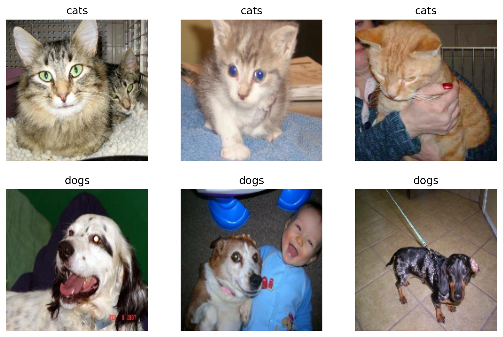

In this blog post, we attempt to train a machine learning algorithm to distinguish the images of cats and dogs. We will go through four different models, and observe which one performs the best!
Part 1: Introduction
Loading the correct packages…
We will use tensorflow.keras to build our ML algorithm! We will grab the appropriate modules under tensorflow.keras and also grab the usual numpy and matplotlib.pyplot for visualizations.
import osimport tensorflow as tffrom tensorflow.keras import utils from tensorflow.keras import datasets, layers, modelsimport numpy as npimport matplotlib.pyplot as pltfrom scipy.signal import convolve2d
2023-02-28 22:42:14.380215: I tensorflow/core/platform/cpu_feature_guard.cc:193] This TensorFlow binary is optimized with oneAPI Deep Neural Network Library (oneDNN) to use the following CPU instructions in performance-critical operations: AVX2 FMA
To enable them in other operations, rebuild TensorFlow with the appropriate compiler flags.
Loading the correct data…
This sample data, which contains labeled images of dogs and cats, is provided by the TensorFlow team. We run the following code to extract the data and create training, validation, and testing datasets.
# location of data_URL ='https://storage.googleapis.com/mledu-datasets/cats_and_dogs_filtered.zip'# download the data and extract itpath_to_zip = utils.get_file('cats_and_dogs.zip', origin=_URL, extract=True)# construct pathsPATH = os.path.join(os.path.dirname(path_to_zip), 'cats_and_dogs_filtered')train_dir = os.path.join(PATH, 'train')validation_dir = os.path.join(PATH, 'validation')# parameters for datasetsBATCH_SIZE =32IMG_SIZE = (160, 160)# construct train and validation datasets train_dataset = utils.image_dataset_from_directory(train_dir, shuffle=True, batch_size=BATCH_SIZE, image_size=IMG_SIZE)validation_dataset = utils.image_dataset_from_directory(validation_dir, shuffle=True, batch_size=BATCH_SIZE, image_size=IMG_SIZE)# construct the test dataset by taking every 5th observation out of the validation datasetval_batches = tf.data.experimental.cardinality(validation_dataset)test_dataset = validation_dataset.take(val_batches //5)validation_dataset = validation_dataset.skip(val_batches //5)#create class names for the training setclass_names = train_dataset.class_names
Found 2000 files belonging to 2 classes.
Found 1000 files belonging to 2 classes.
2023-02-28 22:42:37.135156: I tensorflow/core/platform/cpu_feature_guard.cc:193] This TensorFlow binary is optimized with oneAPI Deep Neural Network Library (oneDNN) to use the following CPU instructions in performance-critical operations: AVX2 FMA
To enable them in other operations, rebuild TensorFlow with the appropriate compiler flags.
Now, the following code will help us read data with better performance:
Here, we create a function named visualize_data that will take in our training dataset as its input parameter. We use dataset.take(1) in our function in order to access the first batch (32 images with labels) from the input dataset. As we iterate through this batch, we put the first 3 cat images into the first row, and we put the first 3 dog images into the second row.
def visualize_data(dataset): plt.figure(figsize=(10, 10))for images, labels in dataset.take(1): i =0 cats =1 dogs =4for i inrange(32):if (labels[i].numpy() ==0):if cats <=3: ax = plt.subplot(3, 3, cats) plt.imshow(images[i].numpy().astype("uint8")) plt.title(class_names[labels[i]]) plt.axis("off") cats +=1 i +=1elif (labels[i].numpy() ==1):if dogs <=6: ax = plt.subplot(3, 3, dogs) plt.imshow(images[i].numpy().astype("uint8")) plt.title(class_names[labels[i]]) plt.axis("off") dogs +=1 i +=1visualize_data(train_dataset)

Analyzing our labels
In the following code, the first line creates an iterator named labels_iterator that contains labels for the training dataset. We will iterate through labels_iterator to see how many cat and dog images are in the training data, respectively.
labels_iterator = train_dataset.unbatch().map(lambda image, label: label).as_numpy_iterator()cats = dogs =0for element in labels_iterator:if element ==0: cats +=1else: dogs +=1cats, dogs
(1000, 1000)
So, we observe that there are a thousand images of each animal in the training set. Suppose we were to create our baseline machine learning model where the model always guesses the most frequent label. In this case, since neither the dog or the cat takes the majority, without loss of generality, suppose that all images are labeled as dogs. Then, our model would only be 50% accurate! (Not so great… but we will definitely come up with better models).
2. First Simple Model
Let’s create our first tf.keras.Sequential model using three Conv2D layers, two MaxPooling2D layers, one Flatten layer, two Dense layers, and one Dropout layer.
From the above summary, we use 2D convolution layers with the first argument representing the dimensionality of the output filter, the second argument representing the kernel size, the third argument representing the activation method, and (for the first convolution) the last argument being our input shape. We use maxpooling in between the convolutions in order to create a downsampled map and help with overfitting. We use a flatten layer next to create a fully connected layer. Then, we use a dense layer to reduce the output shape and add extra parameters and then a dropout layer to once again help with overfitting. Finally, we use a final dense layer with 2 as our argument since we have 2 classes in our dataset and our final classifications want to be one of these two classes.
Now, we will compile this model with our optimizer as adam, loss function as SparseCategoricalCrossentropy(from_logits=True) and metrics as accuracy, and then train for 20 epochs.
We will also plot the accuracy of both the training and validation sets across the 20 epochs.
Comments on Model 1:
Something I experimented with was the parameter for the Dropout layer. After a couple of tests, a value of .15 gave me the best accuracies.
The accuracy of my model stabilized between
Compared with the baseline of 50%, I would say this model definitely did a lot better; however, this percentage of ___ is still not the best and could see further improvements.
Yes, there is a huge overfitting issue on model1. As we notice in the graph, the accuracy on the training data shoots way above the accuracy on the validation data, meaning the model is too catered to fit the training data.
3. Second Model (Data Augmentation Layers)
In this section, we will explore data augmentation using two notable layers: RandomFlip and RandomRotation. First, let’s visualize what each of these layers do to a given image:
As we can see, the first layer RandonFlip was able to flip the image horizontally as we specified in the argument. The second layer RandomRotation was able to rotate the image by a certain amount. The reason for adding these layers is to account for the fact that images can be presented in a format that’s flipped or rotated, and we still want the model to be able to detect that it is either a dog or a cat. So, we are now ready to build our revised model!
Comments on Model 2:
The accuracy of my model stabilized between
Compared with the baseline of 50%, I would say this model definitely did a lot better; however, this percentage of ___ is still not the best and could see further improvements.
Yes, there is a huge overfitting issue on model1. As we notice in the graph, the accuracy on the training data shoots way above the accuracy on the validation data, meaning the model is too catered to fit the training data.
Comments on Model 1:
model1. As we notice in the graph, the accuracy on the training data shoots way above the accuracy on the validation data, meaning the model is too catered to fit the training data.